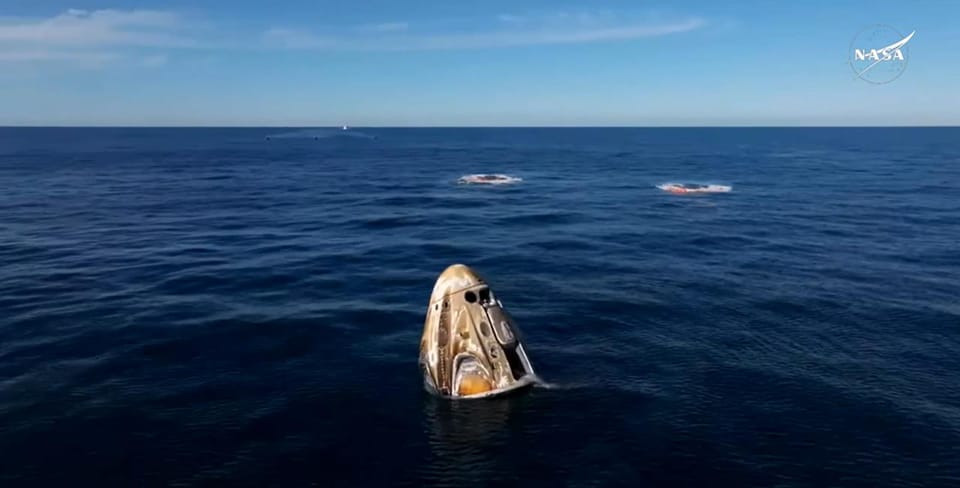

世界苦茶03月19日新闻 | 37条 | 特朗普与普京通话商议停火条件严苛

特朗普与普京通话商议停火条件严苛 | 美最高院保守派首席大法官就弹劾法官与特朗普冲突 | 德国下议院通过提高国防开支法案 | SpaceX终于接回滞留空间站宇航员 | 日首相石破茂因争议礼金支持率下滑 | 上海黄浦区禁止向8岁一下儿童销售二次元商品
透明茶室
苦茶数据
美元兑人民币：7.23（昨日7.22，前日7.23）
美元兑日元：149.51（昨日149.63，前日148.62）
上证指数：3426（昨日3429，前日3428）
标普500指数：5614（昨日5609，前日5638）
比特币：83350（昨日81315，前日83147）
布伦特原油：70.34（昨日71.69，前日71.31）
中国新闻
• 香港警方带走钟翰林继父协助调查 ：已解散的香港独派学生组织“学生动源”前召集人钟翰林的继父，星期二被香港警方国安处人员带回协助调查。综合网媒“香港01”和《星岛日报》报道，香港警方国安处人员星期二上午到何文田区带走钟翰林的44岁李姓继父，协助调查钟翰林涉嫌煽动分裂国家及勾结外部势力危害国家安全的罪行。约中午12时，钟翰林的继父离开位于何文田亚皆老街的西九龙总区警察总部。香港警方国安处近期多次出动，至今已带回十多名与国安逃犯有关的重点联系人协助调查。国安处上月带回跟钟翰林一样被通缉的香港前区议员刘珈汶的姑姑、姑丈和小姑协助调查。
• 上海黄浦区禁止向8岁以下售二次元商品 ：二次元文化在中国盛行并衍生大量相关商品。上海黄浦区官方发布相关指引，禁止经营者向八周岁以下未成年人发售二次元商品及服务。据新民晚报星期一报道，黄浦区3月15日发布上海市首个“二次元衍生商品和服务经营合规指引”，支持规范二次元新业态，推动企业诚信经营，拉动内需提振消费。二次元衍生商品和服务，是基于动画、漫画、游戏、轻小说等二维文化内容开发的周边产品，以及运营和组织各类二次元衍生商品销售活动的相关服务。
• 台湾批评中国富察案审判黑箱作业 ：台湾政府的大陆委员会主委邱垂正受询时批评，中国大陆称公开审判八旗文化出版社总编辑富察案，其实是秘密进行，并指大陆强调保障涉案当事人的司法人权均为谎言。综合台湾中时新闻网和中央广播电台报道，邱垂正星期二到立法院备询前受访时说，政府已掌握富察案的情况，但基于对家属意愿的尊重，不便透露案件细节。他称，中国大陆说对富察案进行公开审判，但其实是把富察公开当作宣传样板。此案的整个审判过程属于黑箱作业、秘密进行。一般人都不知道富察所犯何行，外界无从得知案件相关证据和双方在法庭答辩的信息。陆方强调会确保当事人、辩护人的司法人权，“都是谎言”。
• 习近平贵州考察，强调发展实体经济 ：中共总书记习近平到贵州考察调研时强调，贵州要坚持以实体经济为根基，积极发展战略性新兴产业，也要坚决破除地方保护、“内卷式”竞争，为创业创新营造稳定公平透明、可预期的环境。据新华社报道，习近平星期一至星期二先后到黔东南苗族侗族自治州、贵阳市等地考察调研。习近平星期一下午到黔东南州黎平县肇兴侗寨考察时说，少数民族文化是中华文化不可或缺的组成部分，既要保护有形的村落、民居、特色建筑风貌，传承无形的非物质文化遗产，又要推动其创造性转化、创新性发展。
• 习近平贵州考察，强调少数民族文化保护 ：中共总书记习近平星期一在贵州黔东南州考察调研，是他2012年十八大担任总书记以来第三次考察贵州。中国官媒发布的照片显示，中央书记处书记蔡奇、中国副总理何立峰、中国国家发展改革委员会主任郑栅洁、贵州省委书记徐麟等参与此次考察调研。据新华社报道，习近平星期一下午在贵州省黔东南苗族侗族自治州，考察了黎平县肇兴侗寨，了解当地加强基层中共党组织建设和社会治理、保护传承民族传统文化、推进乡村全面振兴等情况。这也是中共十八大以来，习近平第三次赴贵州考察调研。
• 中国外长王毅将出席中日韩外长会 ：中国官方宣布，外长王毅将出席星期六在日本东京举行的中日韩三国外长会。中国外交部星期二在官网宣布这项信息时也说，王毅在日本期间，还将同日本外长岩屋毅共同主持中日经济高层对话。韩国官方早前也宣布，韩国、中国和日本三国外交部长星期六将在日本东京会面。
• 台湾警员抖音账号自称“中国人”引争议 ：台湾桃园一名警员被发现在抖音账号个人简介写上“我是中国人”，大头照也附上“我爱祖国”图文后，警员所属的分局誓言将严查到底。综合台湾《联合报》和ETtoday新闻云报道，桃园市警局中坜分局警备队叶姓警员2021年在抖音帐号以“凌云小当归”昵称注册，在帐号留下个人简介：“公职人员，我是中国人”。账号的网际互连协议（IP）地址为“中国台湾”，大头照也附上“我爱祖国”图文。他也在2024年11月贴出白天在中坜分局门口的照片，注明“上班中的我”。有网民在社群平台转发叶姓警员的抖音帐号后，台湾网民对账号内容感到不满：“这个已经犯法了吧？”“警察不是不能有政治立场吗”“公职人员，这个就不行了”“好可怕已经渗透到基层的警员了”。中坜分局星期一说，经初步了解，叶姓警员在2021年至2024年间，在勤余时间发表“我爱祖国”的合成自拍照片等内容，分局将严查到底并追究相关行政责任，绝不宽贷，如涉不法，依法究办。
亚太印太新闻
• 日本首相石破茂因赠礼争议支持率下滑 ：日本首相石破茂被爆赠送礼券给新手议员后，民意支持率迅速降到上台后的新低。有近八成的日本市民反对他赠礼的做法，这料成为他继续执政的绊脚石。日本多家媒体星期一发表的民调都显示民众对石破不满。其中，《朝日新闻》3月15日和16日进行的电话民调显示，石破的支持率从上个月的40%下滑到26%，创下他去年10月上任以来的最低水平。反对他的民众则多达 59%，比上一次调查高了10个百分点。民调也显示，石破支持率下滑是因为有75%的民众不满他向初次当选的15名自民党议员每人发放10万日元礼券。这个做法被指可能违反《政治资金管制法》，该法律禁止个人向政客捐赠现金或礼券用于政治活动。
• 台湾民调显示，过半民众支持内阁适度改组 ：政治立场亲绿的台湾民意基金会公布最新民调显示，有51.7%民众同意台湾行政院长卓荣泰的内阁做适度改组。台湾民意基金会示警，这对卓荣泰内阁团队是一大警讯。台湾民意基金会星期二在官网公布最新民调，有48.9%民众赞同总统赖清德处理“国家”大事的方式，39.1%不赞同。台湾民意基金会分析说，这传达了一个清楚的信息，那就是过去两个月朝野因立法院审理预算案和法律案发生激烈冲突，政治僵局难解，但赖清德的总统声望仍逼近50%，“稳定维持在中高档，未受政局纷扰的影响”。至于卓荣泰内阁的施政表现，民调显示，有44.6%民众表示满意，39%不满意。台湾民意基金会对此称，卓荣泰内阁整体施政表现虽未获台湾民众高度肯定，但仍获相对多数人支持。
• 台湾侦测大陆军机59架次，破去年10月纪录 ：台湾国防部星期二称，侦获了中国大陆军机59架次，数量创去年10月以来新高。据台湾国防部在官网发布的消息，从星期一上午6时至星期二上午6时，侦获大陆军机59架次。法新社报道，大陆此次派出的军机数量，创下了去年10月以来的单日最高纪录。台湾国防部进一步说，在侦获的59架次大陆军机中，有43架次逾越台湾海峡中线进入台湾北部、中部、西南及东部空域。同时，侦获九艘大陆军舰，持续在台海周边活动。
• 泰国计划缩短外国游客免签停留期 ：泰国旅游与体育部长索拉翁说，泰政府计划将外国游客的免签停留天数从目前的60天缩短至30天，以遏制利用免签政策从事非法商业活动的现象。彭博社报道，自去年7月起，泰国允许来自93个国家的游客以旅游为目的，在不申请签证的情况下最多停留60天。但据泰国多家媒体报道，相关部门已原则上同意将这一期限缩短至30天。泰国旅行社协会指出，近年来非法工作的外国人数量不断增加，泰国酒店协会认为，较长的免签停留期可能是非法将公寓出租给外国游客的部分原因。上述情况已引发政府部门的关注和政策调整。
科技新闻
• SpaceX龙飞船载四名宇航员返回地球 ：美国太空探索技术公司的龙飞船搭载四名宇航员，已从国际空间站脱离，开始返回地球。因波音公司星际客机故障，两名美国国家航空航天局宇航员威尔莫尔和威廉姆斯，以及另两名美俄宇航员滞留空间站。根据美国航天局的直播画面，龙飞船于美国东部时间星期二凌晨1时零5分与空间站分离，预计将在当地时间星期二下午5时57分左右于佛罗里达州附近海域溅落。
• 美商务部禁政府设备访问中国AI平台DeepSeek ：根据路透社和两名知情人士看到的消息，美国商务部各部门最近几周通知工作人员，中国人工智能模型深度求索已被禁止在其政府设备上使用。路透社星期一报道，一封发给美国商务部各部门员工的群发电邮称，为了确保商务部信息系统的安全，所有政府提供的设备广泛禁止访问DeepSeek。“请勿下载、查看、访问任何与DeepSeek相关的应用程序、桌面应用程序或网站。”
• 百度副总裁致歉，其女儿涉嫌网络“开盒” ：中国搜索引擎百度副总裁谢广军的女儿被指公开他人隐私信息，谢广军为此致歉。综合《南都周刊》和IT之家报道，有中国网友发帖称，有未成年人在网上参与对一名孕妇的“开盒”，对其造谣、曝光其工作单位，并对孕妇的丈夫发去辱骂信息，只因孕妇发表了对某韩国明星的评论。有网友说，参与“开盒”的未成年人为百度副总裁谢广军之女。部分知情人士推测，“开盒”信息可能来源于“社工库”。 （翻评：非常容易就把很多人开盒了。）
财经新闻
• 加拿大2月通胀超预期，央行或推迟降息 ：数据显示，加拿大2月年度通胀率意外升至2.6%，超出预期。随着上月中旬消费税减免政策结束，本已普遍上涨的物价再次推高。路透社报道，这是自七个月以来消费者价格涨幅首次突破2%的关口，达到加拿大央行1%至3%目标区间的中点。1月通胀率为1.9%。加拿大统计局指出，如果没有税收减免，2月通胀率本应达到3%。通胀压力的增加可能使加拿大央行暂缓下月降息，除非其他经济指标如国内生产总值和失业率大幅恶化。
• 澳财长批评美钢铝关税损人害己 ：澳大利亚国库部长吉姆·查默斯说，美国的钢铝关税是损人害己，迄今为止，特朗普的关税政策对澳大利亚整体经济的影响相对较小。查默斯星期二接受澳大利亚广播公司采访时说：“华盛顿出台的关税措施并没有对澳洲造成特别不利的影响，但作为长期合作伙伴和盟友，我们理应获得更好的待遇。”他说：“这些关税适得其反，损人害己，会在美国乃至全球抑制经济增长并推高通胀。”
• 美贸易代表试图稳定关税政策执行 ：在之前的公告扰乱了市场并令不确定性加剧之后，美国总统特朗普的最高贸易谈判代表正试图为预计下个月实施的全面新关税注入秩序。过去的两个月关税消息方面充满着混乱，包括反复无常的政策实施日期、对政策的困惑以及特朗普屡屡发出威胁后又迅速反转的状况。在这期间，美国贸易代表格里尔基本上未曾出现在公众视野。他的任命直到2月下旬才得到确认，白宫顾问彼得·纳瓦罗和商务部长霍华德·卢特尼克提填补了他的角色空缺，负责对外传达信息。格里尔是特朗普第一任期贸易顾问罗伯特·莱特希泽的副手，是一位头脑冷静且法律思维型的人物，彭博社引述由于讨论正在进行中而要求匿名的知情人士说，他正试图掌控计划于4月2日公布的一系列新关税措施。
• 中国汽车协会倡议停止公布销量周榜 ：中国汽车市场价格战持续之际，中国汽车工业协会发布倡议书称，为维护汽车行业健康生态，倡议企业停止对外发布销量周榜，避免碎片化信息引发片面解读，减少误导性舆情对市场的干扰。据中国汽车工业协会星期二在微信公号发布的消息，中国汽车工业协会当天发布关于规范企业数据发布的倡议书。倡议书称，近年来，中国汽车产业加速向电动化、智能化、网联化转型，并取得了领先优势。成绩来之不易，需要行业各方倍加珍惜。
• 霸王茶姬因疑似九段线地图在越南遭抵制 ：中国茶饮品牌霸王茶姬的应用展示含疑似九段线的地图，在越南引发民众不满，当地网民为此呼吁针对霸王茶姬进行抵制。综合越南《年轻人报》新闻网站和Vietnamnet星期天报道，除了霸王茶姬的应用之外，霸王茶姬官网地图也含九段线。该应用在越南目前无法通过应用商店下载。许多越南网民也在霸王茶姬越南版脸书专页留言表达不满。
• 比亚迪考虑在德国设立欧洲第三工厂 ：路透社星期一引述知情人士说，中国电动车巨头比亚迪考虑在德国建立欧洲第三家组装厂。此前，德国反对欧盟对中国产电动车征收关税。知情人士称，德国是比亚迪首选的设厂地点，尽管比亚迪内部对该选址存有疑虑，因为德 国的劳动力和能源成本都高，且生产效率和灵活性低。目前比亚迪尚未做出最终决定。消息人士称，比亚迪考虑在西欧建立欧洲第三家工厂，因为该车企希望以本地制造商的身份，在欧洲客户中建立品牌认知度和接受度。
• 台湾续对中国韩国产不锈钢征收反倾销税 ：台湾官方星期二公告，对中国大陆及韩国产制进口不锈钢冷轧钢品，继续课征反倾销税，为期五年。台湾财政部在官网上说，台湾自2013年8月15日起，对自中国大陆及韩国产制进口不锈钢冷轧钢品课征反倾销税。台湾财政部去年8月公告展开落日调查。台湾财政部关务署说：“嗣经财政部及经济部调查结果，认定倾销及产业损害可能因停止课征反倾销税而继续或再发生，且经济部综合分析评估，无充分证据显示继续采行反倾销措施，对国家整体经济利益有明显之负面效果，爰按现行核定税率继续课征。”
• 香港特首李家超回应李嘉诚出售港口争议 ：香港首富李嘉诚旗下的长江和记集团计划出售巴拿马运河港口引发争议。香港特首李家超星期二就此公开发表三点看法，包括事件引发很多议论，反映出社会关切，值得重视。综合香港电台网、《明报》、网媒“香港01”等港媒报道，李家超星期二出席行政会议前，被媒体问及长和出售巴拿马运河港口引发的争议时说，他有三点看法。李家超说，第一是社会就事件有很多议论，反映社会对事件的关切，“这些关切是值得重视”；第二，港府要求外国政府为企业包括香港企业，提供公平公正的环境，反对在国际经贸关系中使用胁迫或施压的手段；第三，任何交易必须符合法律和规则要求，“特区会依法依规处理”。
• 浙江省鼓励发放结婚消费券，提振婚育率 ：中国一些地方已推出结婚奖励措施，其中浙江省提出，鼓励有条件的地方发放结婚消费券。综合新华社和第一财经报道，浙江省政府办公厅星期天公布《大力提振和扩大消费专项行动实施方案》。在结婚生育方面，根据国家部署，浙江将建立实施生育补贴制度，为符合条件的生育家庭发放生育补贴；鼓励有条件的地方发放结婚消费券、托育券，开展普惠托育基本公共服务。
• 中国40天未进口美国液化天然气 ：中国已连续40天没有从美国进口液化天然气，据报这是近两年来最长的间隔期，因为贸易商被迫将货船转移到其他地方，以避免中国对这种超冷冻燃料征收关税。根据彭博汇编的船舶追踪数据，此次停运是自2023年6月以来持续时间最长的一次。大宗商品追踪公司Kpler的数据显示，目前也没有任何美国液化天然气货船正在驶往中国。彭博社报道认为，特朗普政府挑起的贸易战有可能使全球最大的液化天然气卖家和买家脱钩。北京从2月10日起对美国液化天然气征收15%的关税，以反制美国对华出口全面征收的关税。
• 好市多要求中国供应商降价以应对美国关税： 好市多正在向中国内地的供应商施压，要求他们降价以应对美国的关税。随着贸易战升级导致政治紧张加剧，这件事加大了北京方面关注这种施压的风险。据两家供应商称，这家严重依赖从中国进口的美国仓储式零售商要求降价。他们和另一些中国出口企业都表示，沃尔玛和其他顶级零售商也提出了类似的要求。一家供应商称：“大公司有实力这样做。如果你是我们，你会怎么做？你怎么做都是死路一条。”特朗普政府在2025年2月对中国输美商品征收10%的额外关税，本月又将幅度提高到20%，使美国进口商受到压力，要求他们想方设法最小化关税对其利润的影响。
俄乌战争
• 欧盟就400亿欧元乌克兰军援方案取得进展 ：欧洲联盟成员国在向乌克兰提供价值高达400亿欧元的新军事援助方面取得了进展，这距离本周举行的领导人峰会只有几天时间。的外长会议结束后，欧盟最高外交事务官员欧盟外交与安全政策高级代表卡拉斯说，这项倡议得到了广泛的政治支持，各方正在就细节进行讨论。自上个月以来，欧盟成员国一直在就价值至少200亿欧元的一揽子军事援助进行谈判。这方案的目标是今年交付200万发火炮弹药以及防空系统、深度精确打击导弹、无人机和其他武器。方案还将寻求加强乌克兰的军队组织和军事工业。
• 特朗普表示，乌克兰和平协议已有部分共识 ：美国总统特朗普说，在与俄罗斯总统普京进行通话前，双方已就乌克兰和平协议的多个方面达成一致。英国广播公司报道，特朗普在他的社交媒体平台Truth Social发文称，他将在当地时间星期二上午与普京通话。他指出，尽管已有协议，仍有许多问题须要解决。特朗普发文说：“每周有2500名士兵丧生，双方都在付出巨大代价，这必须立即停止。我非常期待与普京总统的通话。”
• 普京指出，西方即便松绑制裁仍难恢复自由贸易 ：俄罗斯总统普京在与国内商界领袖的会谈中指出，即便西方放宽对俄制裁，企业也不应期望全面恢复自由贸易或资本流动。普京星期二说：“我们的竞争对手始终试图削弱并遏制我们。即便他们在某些方面作出妥协，提议取消或放宽制裁，另一种制造麻烦的方式也会立刻接踵而至。”
• 特朗普与普京通话，讨论俄乌停火与战俘交换 ：特朗普与普京3月18日通电话。普京支持特朗普提出的俄乌在30天内同时放弃袭击对方能源基础设施的提议，并立即向俄军下达了相应命令。普京还表示，俄罗斯和乌克兰将于19日以“175对175”交换被俘人员。出于善意，正在俄罗斯医疗机构接受治疗的23名乌克兰重伤军人也将被移交。就特朗普提出的30天停火倡议，俄罗斯提出一系列要求，包括确保对俄乌双方整个接触线上的停火进行有效管控、停止乌境内强制动员和重新武装乌军部队。普京强调，彻底停止向乌克兰提供外国军事援助和情报信息是防止冲突升级、通过政治和外交手段解决冲突的关键。双方同意俄乌冲突需要以实现长久和平结束，停止冲突将从能源和基础设施停火开始，同时将就实施黑海海上停火、全面停火和永久和平进行技术谈判。相关技术谈判将立即在中东地区展开，并正就此组建专家组。两人表达了改善双边关系的必要性，并围绕推动经济和能源领域互利合作有关想法进行了讨论。双方就中东和红海地区形势等其他国际问题进行了沟通，谈及在中东地区进行合作防止未来冲突以及制止战略武器扩散等议题。特朗普支持普京有关在美国和俄罗斯组织两国冰球运动员比赛的想法。 （翻评：俄罗斯马上袭击了乌克兰的基础设施。）
• 泽连斯基表示，乌克兰将支持美国关于停止袭击能源基础设施的提议： 但乌克兰盟友不会同意停止军援，俄罗斯此举旨在削弱乌克兰。泽连斯基重申，谈判需要有乌克兰和欧洲参与。他希望与特朗普交谈，了解与普京通话的细节。泽连斯基还称，俄军正在苏梅附近集结，计划新的袭击攻势。俄罗斯国防部18日说，乌军当天对俄罗斯别尔哥罗德州发动袭击，被俄军击退。乌军此举是为了“给当天举行的俄美领导人通话制造负面影响”。波兰、立陶宛、拉脱维亚和爱沙尼亚3月18日表示，由于俄罗斯的军事威胁，四国计划退出《渥太华公约》。该公约禁止使用和生产杀伤人员地雷。芬兰也在考虑退出该公约。
其他新闻
• 以色列空袭加沙，至少百人死亡 ：以色列对加沙地带发动军事打击，此举有可能破坏摇摇欲坠的停火局面。巴勒斯坦医疗和安全部门说，以军的空袭已造成至少100人死亡，数十人受伤。新华社引述巴勒斯坦通讯社的报道说，死者中包括妇女和儿童，而由于以色列空袭仍在进行中，救援人员目前难以抵达现场开展急救工作。巴勒斯坦伊斯兰抵抗运动星期二指责以色列总理内坦亚胡及其政府“恢复对加沙地带平民的侵略和种族灭绝”，并认为以色列对此次冲突升级负有全部责任。
• 胡塞武装再次袭击美军杜鲁门号航母 ：也门胡塞武装发表声明称，他们在过去48小时内第三次袭击美国海军哈里·杜鲁门号航空母舰。胡塞武装发言人叶海亚·萨雷亚星期二通过组织控制的马西拉电视台说，他们使用两枚巡航导弹和两架无人机对哈里·杜鲁门号实施打击。此外，萨雷亚还提到，胡塞武装在红海地区向另一艘美军驱逐舰发射一枚巡航导弹，并动用四架无人机。他强调：“只要对我们国家的侵略没有停止，我们就不会停止打击红海和阿拉伯海的敌对目标。”
• 伊朗谴责美方敌对言论，警告严重后果 ：伊朗常驻联合国代表伊拉瓦尼致信联合国安理会，强烈谴责美国总统和美政府高级官员最近发表的敌对言论，并警告说，美国任何侵略行动都将产生严重后果。据伊朗塔斯尼姆通讯社星期二报道，伊拉瓦尼说，当前，美国企图为其侵略也门的行径和战争罪行辩解，并对伊朗进行毫无根据的指责。与此同时，美国公开威胁对伊朗诉诸武力。这种挑衅言论显然违反了国际法和《联合国宪章》基本原则。他还警告说，伊朗将在国际法框架内坚决捍卫其主权、领土完整和国家利益，任何对伊朗的侵略行为都将产生严重后果，美国将对此承担全部责任。
• 美法院裁定特朗普政府削减国际开发署或违宪 ：美国马里兰州联邦地区法院法官西奥多·庄3月18日裁定，政府效率部削减美国国际开发署的行为可能违反宪法，要求特朗普政府恢复国际开发署所有雇员的电子邮件和计算机访问权限，停止继续解雇雇员。但法官没有下令撤销此前的解雇或完全恢复该机构运作。
• 美最高法院首席大法官警告勿滥用弹劾法官 ：美国最高法院首席大法官罗伯茨罕有发表声明称，弹劾法官不是解决司法裁决分歧的合适方式，正常的上诉审查程序才是。特朗普稍早时候发文，将哥伦比亚特区联邦地区法院法官博斯伯格称为“麻烦制造者和煽动者”，呼吁弹劾他。博斯伯格此前颁布临时禁令，阻止政府援引《外敌法案》驱逐移民。弹劾法官需要获得众议院简单多数同意、参议院超过三分之二多数同意。
• 德国联邦议院3月18日通过提高国防开支的财政方案： 该方案由德国联盟党与社会民主党在联合组阁谈判中提出，旨在调整德国《基本法》中“债务刹车”条款，放宽政府债务上限，为国防等大规模支出提供资金支持。未来，当国防开支以及部分安全政策支出超过一定数额时，将不再计入《基本法》规定的债务限制。方案还提出通过债务融资设立总额5000亿欧元的特别基金，用于交通、电网等基础设施建设。该基金将被认定为额外债务，不计入现行债务上限。在当天联邦议院表决中，方案草案以513票赞成、207票反对、0票弃权的表决结果获得三分之二多数票支持。草案随后将提交联邦参议院，并需获得三分之二多数票支持方可最终通过。多家德国主流媒体认为，后续表决通过的可能性较大。“债务刹车”是德国政府为防范债务过快增长而制定的一项财政规定，于2009年写入《基本法》。该规定要求联邦政府每年结构性新增债务不得超过国内生产总值的0.35%。
• 提出特朗普精神错乱综合症法案的共和党人因招揽未成年人而被捕： 明尼苏达州一名共和党州议员最近提出了一项法案，为痴迷于唐纳德·特朗普的自由主义者设立精神疾病类别，该议员于周二因涉嫌招揽未成年人卖淫而被捕。明尼苏达州参议员贾斯汀·艾克霍恩于周二被捕并被登记在案。警方称，他以为自己在和一名 17 岁的女性交谈，但实际上是在与明尼苏达州布卢明顿警察局的侦探交流。艾克霍恩现年 40 岁，明尼苏达州参议院网站上的个人资料显示他已婚并有四个孩子，他因招揽未成年人卖淫而面临重罪指控。“作为一名 40 岁的男人，如果你来到橙色连身裤区想和别人的孩子发生性关系，你可以预料到我们会把你关起来，”布卢明顿警察局的布克·霍奇斯在一份声明中说。